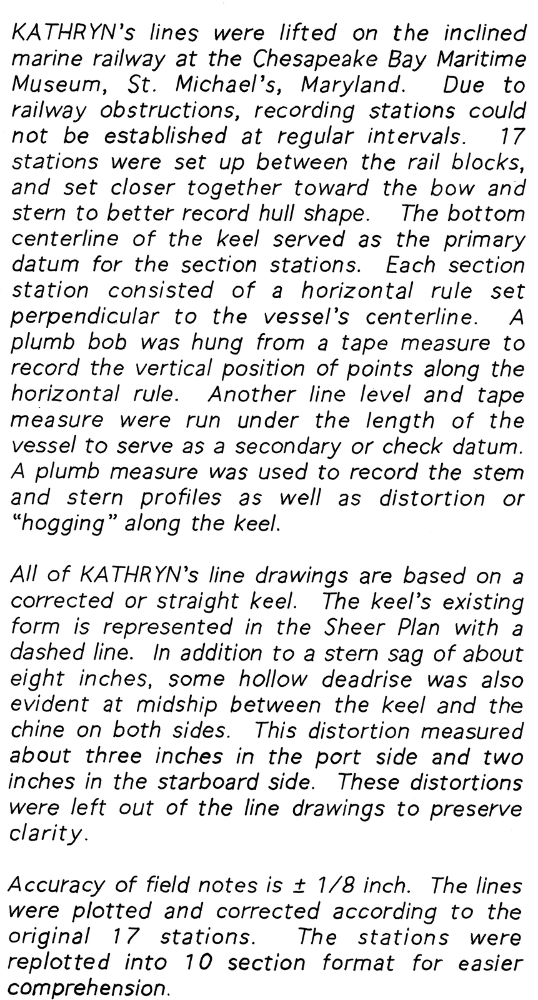

Original scan pixels: [10945, 702, 13456, 5368]; source SHA-256: 47fc474d10d7e0f9be0ef31124356dd11dffc1a795dace93f11239c1eeeb75e2.
Native lossless view · Raw OCR · Word coordinates/confidence · Manifest

Seventeen field stations were placed irregularly between railway blocks, closer at bow and stern; the keel bottom centreline was the primary datum. The drawings were replotted into ten-section format.
Lines are based on a corrected/straight keel. The existing keel is dashed in the sheer plan. Stern sag about 8 inches and midship hollow deadrise about 3 inches port/2 inches starboard were left out of the lines for clarity.
Stated accuracy of field notes is plus/minus 1/8 inch.
KATHRYN’s lines were lifted on the inclined marine railway at the Chesapeake Bay Maritime Museum, St. Michael’s, Maryland. Due to railway obstructions, recording stations could not be established at regular intervals. 17 stations were set up between the rail blocks, and set closer together toward the bow and stern to better record hull shape. The bottom centerline of the keel served as the primary datum for the section stations. Each section station consisted of a horizontal rule set perpendicular to the vessel’s centerline. A plumb bob was hung from a tape measure to record the vertical position of points along the horizontal rule. Another line level and tape measure were run under the length of the vessel to serve as a secondary or check datum. A plumb measure was used to record the stem and stern profiles as well as distortion or “hogging” along the keel. All of KATHRYN’s line drawings are based on a corrected or straight keel. The keel’s existing form is represented in the Sheer Plan with a dashed line. In addition to a stern sag of about eight inches, some hollow deadrise was also evident at midship between the keel and the chine on both sides. This distortion measured about three inches in the port side and two inches in the starboard side. These distortions were left out of the line drawings to preserve clarity. Accuracy of field notes is + 1/8 inch. The lines were plotted and corrected according to the original 17 stations. The stations were replotted into 10 section format for easier comprehension.